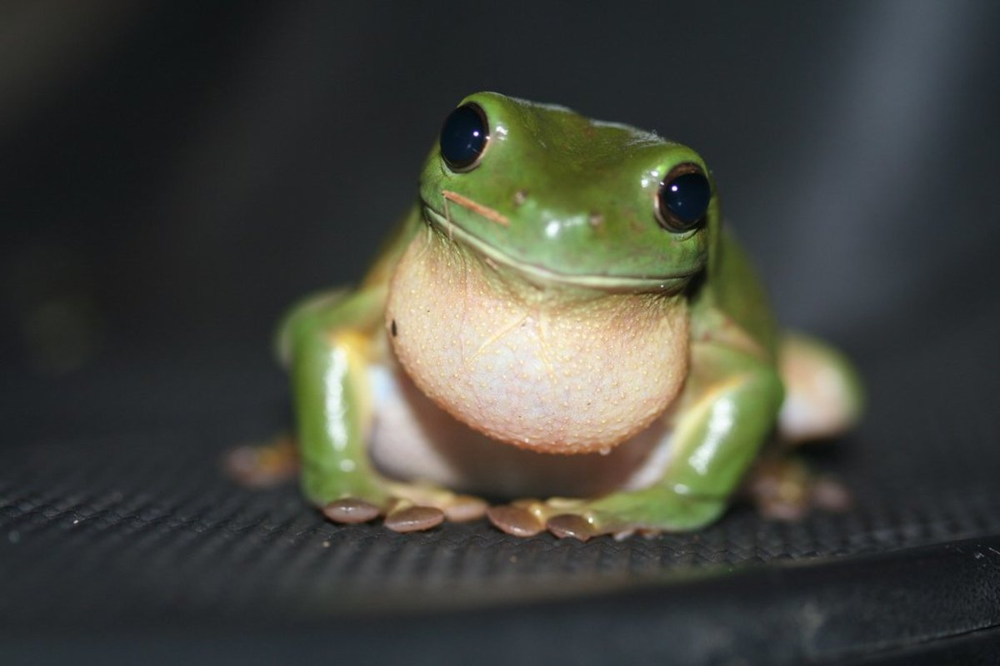
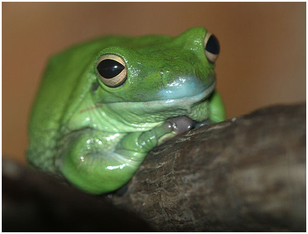
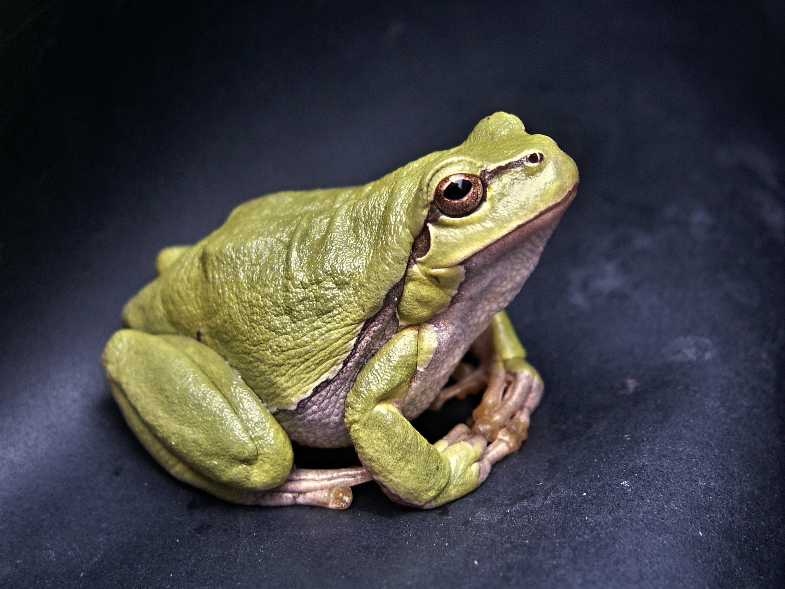
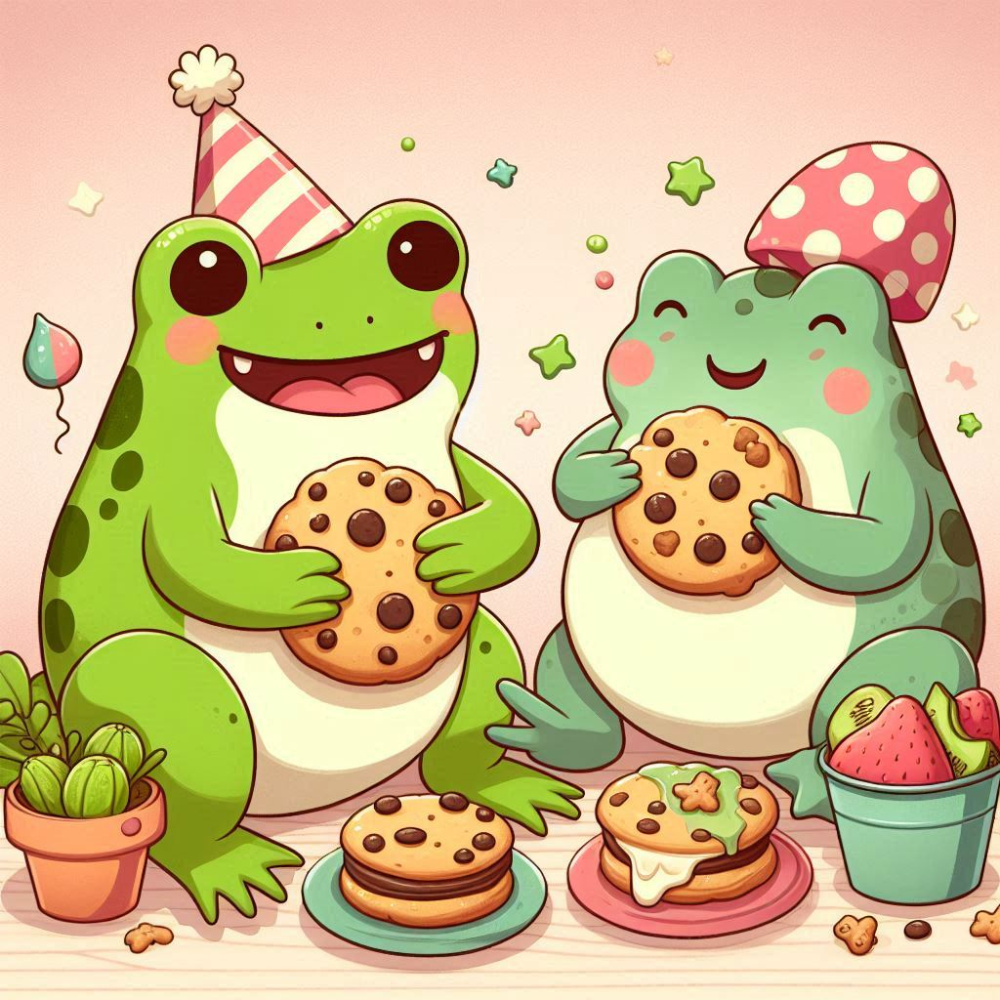

About
Welcome to the Cute Frog Website! This website is dedicated to all things frogs. Frogs are cute, interesting animals that come in many shapes, sizes, and colors. They are also important to the environment because they eat insects and are a food source for other animals.
Here are some fun frog facts:
- Frogs are amphibians.
- There are over 6,000 species of frogs.
- Frogs have sticky tongues that they use to catch insects.
- Some frogs can change their skin color to blend in with their surroundings.
- Frogs lay eggs in water and their young go through a metamorphosis to become adults.
- Frogs are an important part of the food chain.
- Frogs are facing many threats, including habitat loss, pollution, and climate change.
- You can help frogs by protecting their habitats and not using pesticides in your garden.
- Frogs have a unique way of breathing - they can breathe through their skin!
- Some frogs can jump up to 20 times their own body length.
- Frogs have a special membrane in their eyes that allows them to see in almost all directions at the same time.
- There is a species of frog that can freeze solid during winter and thaw out in the spring.
- Frogs are an important indicator species - their health can tell us a lot about the health of the environment.
- Frogs are found on every continent except Antarctica.
- Frogs are an important part of many cultures and have been featured in art, literature, and mythology for thousands of years.
- Cartoon frogs, such as Kermit the Frog from The Muppets and Froggy from The Little Rascals, have become iconic characters in popular culture.
- Cartoon frogs are often depicted as fun-loving and mischievous creatures.
- Some famous cartoon frog characters include Michigan J. Frog from Looney Tunes and Hypnotoad from Futurama.
- Cartoon frogs are known for their distinctive voices and catchphrases.
- Why did Kermit the Frog bring a ladder to the bar? Because he heard the drinks were on the house!
- What's Kermit the Frog's favorite type of music? Hip Hop!
- Why did Kermit go to the bank? To open a "green" account!
- What do you call a frog that's illegally parked? Toad!
- Why did Kermit take up gardening? Because he heard it was a "ribbiting" hobby!
Gallery





And here are some really cute AI generated frog images dancing with cookies!

Contact
Raphael Johnson
Email: raphiej@fakemail.com
Phone: 123-456-7890
Dandrift Moody
Email: dandrift@fakemail.com
Phone: 987-654-3210